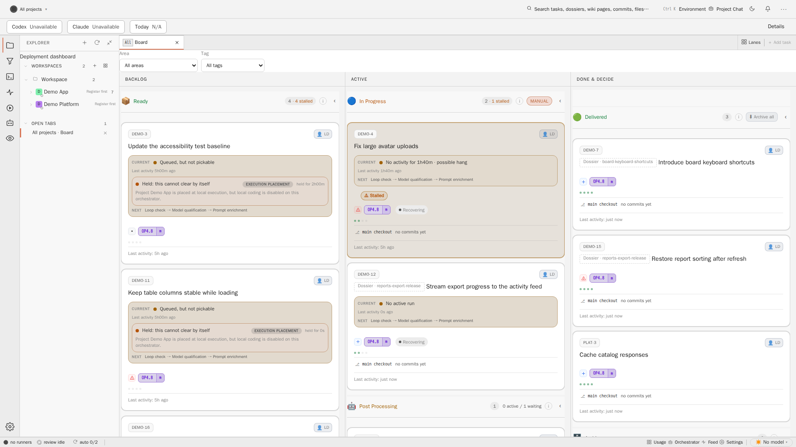
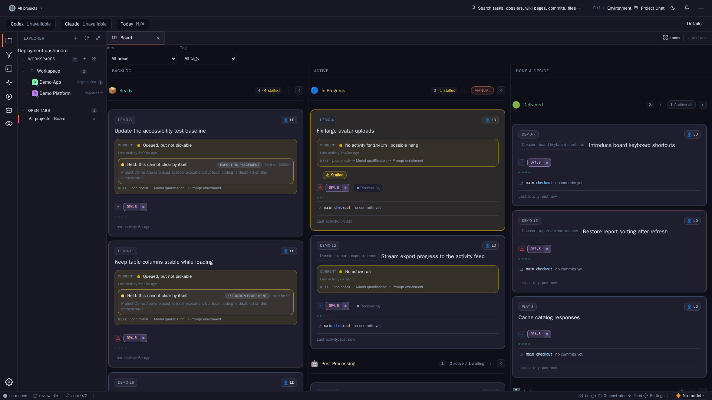

The full test suite moves from the path of every card to the point before delivery. The board gains a Delivery section showing which cards landed in which environment. A central API replaces git for the hot paths. This Dossier updates the target picture with three parts and ten decisions, and cuts the work into implementation cards.
Pattern conceptStatus decided 27 October 2026Phase decision-readySource AGT-3276Related AGT-W77, AGT-W69, AGT-W82, AGT-3044As of develop 8e3a6a86, 21 October 2026
Source. Robert, 20 October 2026, translated from German: "The target picture should be that a run of all tests happens, optionally, only before deployment or delivery. For the full pipeline we need lanes per stage: Delivery to Stage, Delivery to Dev, and so on. One lane per deployment, where you see which new cards landed there. We have to solve some of git's performance problems by offering a central API for certain functions, at least for the cards and certain views."
Reference. Anthropic Engineering, "Redesigning source control", read 21 October 2026. Section 02 maps its practices onto Agent Studio.
00 Summary
Tests. Per card, only the build, the affected tests and fast checks run. After the merge, develop runs the union of affected tests per merge window and the full suite nightly. The full suite runs once on the release candidate before the first environment, required by default for projects with a production environment. A red develop is attributed to one merge and repaired by an agent: revert when clean, fix forward otherwise. A red develop holds release candidates and does not stop merges. The batch gate becomes the post-merge window, sharding moves to the nightly and pre-delivery runs, and promotion to main reuses the pre-delivery verdict.
Delivery lanes. A Delivery section after "Done & Decide" shows one column per declared environment: the cards that landed with the current release, and the cards waiting for the next deploy. It is a projection of releases and deploy runs (AGT-3201, on develop) and card-environment links (AGT-3202, not yet integrated). Cards keep their lane state. There is no Dev environment today, so "Delivery to Dev" needs a declared environment and a lifecycle order.
Central API. The Task Server, already the decided authority, serves card state and board, task artefacts and release attribution. One producer computes diffs against merge base, history and blame as derived data. Gates and reviews fetch source through a host object cache instead of bundles and clones. The git-backed workspace repository becomes an export. Migration runs in six steps, each reversible until the write cutover.
Targets: lead time card to develop median 20 minutes, gate minutes per card median 10, red develop time p90 under 2 hours, board read p95 under 200 ms with zero git spawns.
Scope note: this concept run may change only this Dossier directory. The card asks for a German Dossier under docs/operations/ with a link from the North star. The repository language policy and the concept delivery contract require English and docs/<slug>/. Moving the Dossier, linking it from the North star and adding the row in docs/start/README.md is implementation card P1. No product code changed.
Since 27 October 2026 (AGT-3308) the Dossier lives under docs/operations/pipeline-delivery-target/ and is linked from the North star.
01 Current costs
Three costs dominate the path of a card from review to a running environment. Each one has a measured trace in the repository.
Full suite before every merge
Per merge.PreDevelopBuildGate asks for the test level work-package whenever a merge touches managed code or frontend/. DeterministicTestScope then falls back to the full suite: .agent-studio/project.yml declares no folder-to-test-project map, and a change across more than one module also forces the fallback. All four test commands run: backend, runner, task server and frontend unit.
Per batch. Since AGT-W77 D1 (11 October 2026) the batch gate runs the full suite once per wave on the combined candidate (AGT-3052). Per card, the review runs build, lint and the tests selected by type reference (AGT-3085). The batch gate is off by default per project (BatchGatePolicy: Enabled=false, documentation scope, size 2 to 8, 45 minutes look-ahead).
Size.backend.Tests holds 8,545 [Fact] and [Theory] attributes; recorded runs executed 8,980 and 9,936 test cases. The card quotes about 11,000 tests across the suites. Four percent of the tests carry 97 percent of test time (AGT-W77 §1).
Slots and parking. On 17 to 19 October 2026 the full backend suite took 17 to 36 minutes per gate run on two gate slots, and 16 reviewed cards were parked because the gate queue exceeded its budget (AGT-3232 rationale in GateShardPlanner). The merge itself is still serialised for all projects by one SemaphoreSlim(1,1) in MergeIntoDevelopRunner.
Promotion. The develop-to-main train runs the whole solution again (scripts/release/promotion-full-gate.sh). On 12 and 13 October the promotion gate took 91 minutes, with OrchestratorApi.Tests at 72 minutes. AGT-3099 removed the second identical run before publishing. The card quotes 28 to 49 minutes on a quieter host.
Measured test minutes in front of a card or a release, with sources in section 09, against the T1 target of section 03. The 25 to 100 minute range is the card statement for the per-card gate under load; the other ranges are recorded runs.
Source transfer per run
Each remote gate receives its source as a git bundle. The SSH path thins it against up to 16 cached tips on the gate host; the pull path bundles --all after a fresh fetch, so it carries full history. Both refuse bundles above 1 GiB. The local pack of this repository is 271 MiB. The card reports bundles of up to 200 MB per run. Review attempts clone the repository for every attempt, partial for public repositories and full for private ones.
Board reads from the workspace repository
Card state is the task.json file of each task folder in the workspace repository. The backend scans folders into TaskIndexCache, and GitStateIndexService computes git projections in the background. Incidents in the git-facts Dossier: card list 25 to 90 seconds on 28 September, 94 seconds on 11 October. The card reports board latencies of 8 to 300 seconds on 15 October. The workspace repository itself reached 5.0 GB of .git with 3,872 commits per week in July, and its push was blocked for five days with 3,341 commits unpushed.
02 Reference model
Anthropic's engineering article "Redesigning source control" describes Scion, an in-house version control system for an always-online fleet of agents and jobs. It was read on 21 October 2026. Several of its practices map onto the three topics of this Dossier. Others solve a scale problem Agent Studio does not have.
Scion practice
Agent Studio today
What transfers
Changesets are created on the server in a write-ahead log. Commits, rebases and merges run server-side; there is nothing to push.
Runner hosts commit in leased worktrees. The platform pushes; integration merges in an integration worktree under one publication lease.
Partly. The platform already owns git (ADR-0052). Nothing requires replacing git as the storage format.
The merge queue has no global lock. Testing relies on post-merge and pre-deploy checks. Claude fixes the resulting conflicts and breakages quickly.
Every card or batch pays the full backend suite before it may merge. Two gate slots serialise all projects.
Yes, at our scale. This is Robert's first point. The cost here is suite minutes and queue time per card, not lock contention between thousands of merges.
CI asks the server for diffs, for example a commit against its merge base, instead of checking out code.
Review attempts clone the repository and run git diff against the merge base on the runner host.
Yes. A diff object keyed by base and head SHA is already proposed (AGT-3017 D1).
History, blame, commit and merge queries are server APIs, so many jobs need no local repository.
Card open and release attribution still spawn git or scan task folders.
Yes. Derived data per commit, owned by one producer (git-facts Dossier AGT-3044).
Clients keep a bounded object cache with sparse, virtualised checkouts. Three cache tiers (node daemon, regional cache, authoritative server) each hold more than 99 % hit rate and no long-lived state.
Gate sources travel as git bundles per run; the review baseline cache and the preparation cache live per host.
Yes, in a smaller form. Host cache, installation cache and authority. No regional tier is needed for one installation.
Derived data such as blame and commit-graph indices is computed separately from the write path.
Git facts are computed on demand, partly in request paths.
Yes. This is the git-facts working decision: no request-time git.
About 30,000 merged changes per day in September 2026; 200x less CPU and memory than the git mirrors it replaced.
246 first-parent merges into develop from 7 to 20 October 2026: 0 to 67 per day, median about 15.
No. We do not need a new version control system. The gain we can reach is latency per card and per board read.
The article does not say what runs before a change merges. This Dossier therefore keeps a cheap pre-merge tier (build, affected tests, fast checks) and does not copy a "nothing before merge" rule.
03 Test strategy along the pipeline
The full backend suite moves out of the path of every card. Each tier answers one question, at the point where that answer is cheapest.
Proposed placement of the test tiers (option T-B, section 06). The accented station is the only place the full suite is mandatory, and only for projects that enable it.
Tier
Where and when
What runs
Blocks
Budget
T1 Per card
Review attempt on a runner host, every fix round
Model review; build of the solution; tests selected for the changed files from the generated project map; lint, type check and format of the touched areas; the repo-contract slice when non-code paths change
The card's integration
Median 10 min, p90 20 min
T2 Integration
Merge into develop, per (project, branch), no cross-project lock
Compile of the merged tree; the T1 selection again only when develop moved over shared paths
The push of this merge
Median 5 min
T3 Post-merge
On develop after each merge window (for example every 30 minutes or 6 merges) and nightly
Window: union of the affected tests of all merges in the window. Nightly: the full suite, sharded, on the exact tip
Nothing directly; a red result opens a repair card and holds release candidates
Window 15 min; nightly full suite as long as it takes outside the day
T4 Before delivery
On the release candidate, before the first environment, optional per project
The full suite (backend, runner, task server, frontend unit, the end-to-end set marked for release), sharded
The release and every deploy of it
Once per candidate; reused by every stage and by the promotion to main
T5 Per stage
After each deploy run
Health checks and smoke tests declared per environment
Promotion to the next environment
Minutes
Failures after merge
Moving the full suite after the merge means develop can turn red. The design question is how fast a red develop is found, attributed and repaired, and what it is allowed to block.
Find. Every T3 run records its tip SHA and verdict. The last green SHA per project is a first-class fact. A red window or nightly run marks develop red for that project, visible on the board header and in the Delivery section.
Attribute. The suspects are the merges between the last green SHA and the red tip. Three cheap steps narrow them, in order. First, intersect each suspect's changed paths with the failing tests' project map. Second, re-run only the failing tests at the merge points (one test class costs seconds; the P3 report measured 7.3 s for 4 tests against 93 min for the full suite). Third, bisect only when more than one suspect remains. Flaky quarantine (AGT-W57 D3) runs first, so a known flaky test opens no repair.
Repair. The Orchestrator Engine opens exactly one repair card per failure fingerprint, in the pattern of FailureInterventionService, with the attributed merge, the failing tests and the log excerpt. The repair is revert when one merge is attributed, the revert applies cleanly and no later merge depends on it. Otherwise it is fix forward: a coding attempt with the failure in its prompt, at the front of the queue. A revert reopens the original card in Preparation with the failure attached, so the work is not lost.
Contain. A red develop holds release candidates (T4) and therefore every deploy. It does not stop merges. A card whose changed paths overlap the failing area waits for the repair; other cards keep merging. After a time box (2 hours) without a green T3, the engine escalates to the Human Operator.
Batch gate, sharding and promotion
Batch gate. Today it runs the full suite once per wave on the combined candidate before merge (AGT-W59 D1, AGT-W77 D1). In the target, the batch becomes the T3 merge window: the same look-ahead planner sizes the window, the same red-member isolation becomes attribution. The pre-merge batch gate stays available per project as a stricter mode, and is the fallback while the post-merge path is proven.
Gate sharding (AGT-3232). Sharding moves to where the full suite still runs: the nightly T3 run and the T4 release candidate. Both run outside a card's path, so they can use every free runner slot.
Promotion develop to main. The promotion runs the full suite a second time today. In the target it promotes the exact SHA whose T4 verdict is green, and reuses that verdict instead of running again. This needs the T4 verdict keyed by commit SHA and command-set digest, which GateResultCache already does per host.
Per-task gate. The develop integration gate shrinks to T2. The gate slots stop serialising all projects behind one card's full suite.
04 Delivery lanes per deploy stage
Board today
The board ends at the lane 6-completed, whose single display name is Delivered, with the sentence "Delivered and accepted." (lane-presentation.ts). It sits in the "Done & Decide" group together with Escalated, Human review and Archive. No lane, group or filter on develop says where a card runs. The existing filter waitingForReleaseOnly refers to the AGT-2709 dependency release, not to a deployment.
"Delivered" therefore means "integrated and accepted", not "live". The Delivery chain Dossier (AGT-W57, E4) recorded the consequence: a read-only sweep found 4 of 8 recent "delivered" cards not live, because integration is not deployment.
The capture in section 09 shows these lanes at the end of the pinned demo board.
Existing deploy model
AGT-3201 (BD-1) is on develop. It gives every project the data a delivery lane needs:
Releases. A green integration build posts to /api/deploy/gate-releases. DeployService.CreateRelease records an immutable release for the gate artefact and starts the automatic Staging phase. Each release carries CardKeys: the cards whose integration verification names a commit reachable from this release and not from the previous one.
Deploy runs.Deployment records with the states queued, running, succeeded, failed, cancelled and awaiting-approval, and the triggers deploy, redeploy, rollback and automatic-rollback.
Environment status.EnvironmentStatusProjection computes, per environment in order, the current release (last successful run, rollbacks included), the newer release eligible for it (already successful in the previous environment) and CardsSinceLastDeploy: every card of the releases between the two. That list is exactly the "waiting" part of a delivery lane.
Lifecycle.StandardLifecyclePolicy: Staging is automatic; Production needs approval by an Owner or Maintainer.
Two gaps remain. First, there is no Dev environment. EnvironmentKinds knows only staging and production. Project declarations (ProjectEnvironmentService) accept stage, production and other, and sort other after production. "Delivery to Dev" therefore needs a declared environment and an explicit lifecycle order (decision D6). Second, AGT-3202 (BD-5, cards know their environments) is not integrated. Its badges, the per-card deployment projection and the board filter staging-only | production | not-production | rolled-back exist only on its result branch (last commit c1b3b4833), not on develop 8e3a6a86.
Proposed view
A Delivery section follows the "Done & Decide" group. It is a projection, not a set of new lane states. It has one column per declared environment in lifecycle order, plus a first column for cards that are integrated but not yet in any release.
Column
Header
Landed part
Waiting part
Integrated on develop
Last release candidate, post-merge state (green, running, red)
Cards with an integration verification that no release names yet
none
Delivery to <environment>
Current release version, last run state and time, health, pending approval
CardKeys of the current release and the releases before it, newest first, bounded to the last N releases
CardsSinceLastDeploy of that environment
Mock-up of the recommended delivery view (option L-B, section 06; the Dev column assumes decision D6). Card keys, versions and times are illustrative, not product state. A card's lane stays Delivered; the view only places it by environment. The accented column marks the stage that needs an approval.
Card movement
The lane state does not change. A card stays in 6-completed. Integration, Human Review and acceptance keep their meaning (AGT-W57 D5). The Delivery section only places the card by environment. Lane-state rules, authority floors and the orchestration decision library stay untouched.
A card can show in several columns. It appears as landed in every environment that runs a release containing it, and as waiting in the next one. Collapsing to "furthest environment only" is a display option, not a data rule.
Movement follows deploy runs. A succeeded run moves the cards of its release from waiting to landed in that column, and into waiting in the next. A rollback moves them back and marks them rolled back, as AGT-3202 does for badges.
Archive does not hide delivery. Release attribution already scans archived cards (ScanAllJobsWithArchive), so an archived card still shows where it runs.
Agent Studio itself. Under BD-D4 A (recommended in the Bereitstellung Dossier) the platform's own deploy from develop to Stable becomes a project with releases and approvals. Its Delivery section then shows which cards run on Stable and which wait for the next stable update.
Relation to the Octopus-style lifecycle
In Octopus terms (Bereitstellung Dossier, AGT-W82 §2) a lifecycle is an ordered list of phases, each with one or more environments, and a release progresses phase by phase. The Delivery section is the Octopus dashboard turned into board columns for one project: phases become columns, releases become headers, and the cards are the work items Octopus links through its issue-tracker integration. A second lifecycle such as hotfix (Integrated platform Dossier, IP-D12) skips columns; its cards show as landed in production without passing the waiting part of Stage. Channels need no column; a channel tag on the release header is enough.
05 Central API instead of git for hot paths
Robert's third point names the cards and certain views. The table lists every hot path that today reads git or the git-backed workspace repository, what it costs, and which service answers it in the target.
Hot path
Today
Measured
Target owner and API
Card state and board
TaskScannerService reads task.json per task folder in the workspace repository; TaskIndexCache publishes generations with a 30 s safety TTL; GitStateIndexService fills the git projection in the background.
Card list 25 to 90 s (28 Sep) and 94 s (11 Oct); 8 to 300 s board latencies (15 Oct, operator measurement); grouped client read p95 9,988 ms with 3 of 20 reads at the 15 s timeout (25 Sep).
Task Server: tasks table as the authority, a board read model per project, change feed for the Studio. No file scan, no git in the request.
Diff against merge base
Review attempts clone (--filter=blob:none or credentialed full clone), fetch the integration ref and run git diff against the merge base. Card open computes commit diffs through a 512-entry LRU.
Budget 200 files and 12,000 lines per review; card-open provenance needs 3 to 5 rev-parse and 2 merge-base calls per commit (git-facts R4).
Diff objects keyed by repository, base SHA, head SHA, options and renderer version, immutable, computed once on a runner host and served by the Task Server (AGT-3017 D1, D5 A).
History and blame for review
On demand: TaskFileHistoryService, /files/{path}/history, commit lists by log.
Single git spawns of 5 to 9 s on Windows (11 Oct); 70 to 100 ms per spawn when healthy.
Derived data per commit: path history, reachability and blame by (commit, path), computed by one producer and stored beside the facts (git-facts option C).
Gate source delivery
RemoteGateTransport builds a git bundle per gate against up to 16 cached tips on the remote host; the pull transport bundles --all. Both refuse above 1 GiB.
Up to 200 MB per run (operator figure, 20 Oct); stale transport folders swept after 26 h.
Host object cache on each runner host: the gate asks for a tree SHA, fetches only missing objects through the Task Server, and materialises a sparse checkout of the projects its test plan needs.
Task-folder artefacts
Committed into the workspace repository by the evidence batcher (15 s quiet window, 60 s maximum), pushed single-flight.
.git 5.0 GB and 3,872 commits per week in July; 3,341 commits unpushed for five days; evidence-flush-stalled alarm after 15 min of lock.
Task Server artifacts and task_file_revisions tables with content hashes; large blobs in an object store. The workspace repository becomes an export.
Release card attribution
DeployService.IntegratedCards scans all task folders including the archive and lists git revisions per release.
Board size on 11 October: 235 live and 2,088 archived cards, all scanned per release.
A Task Server query over integration records and the reachability facts.
Task Server as authority
The North star already names the Task Server the only durable authority for tasks, lanes, runs, review subjects, leases, events and artefacts (AGT-W49, AGT-W65). Its SQLite store has the tables: tasks, runs, artifacts with SHA-256 and pointer-only rows, task_file_revisions, review and gate subjects. It also serves run diffs from stored artefacts without git (/runs/{i}/diff). What is missing is the cutover. Production still runs the file-backed monolith. The remote Task Server runbook counts 296 Task Server-owned operations with v1 handlers and 50 without, which block cutover.
This Dossier adds no new authority. It asks that the hot paths above be served by the authority that is already decided, in the order of measured pain, and that git stay the storage format for source code only.
Caching tiers
Proposed read path for the hot paths (option A-B, section 06). The Studio reads tier 2 directly; work on runner hosts reads through tier 1. A miss falls through exactly one tier at a time; a tier failure never fans out to the authority, following the strict tiering of the reference article.
Tier 1, runner host. Immutable objects by hash, shared by all slots on the host. Today's review baseline cache, gate dependency cache and preparation cache stay; the new piece is a source object cache, so gates and reviews stop transferring bundles.
Tier 2, installation. Read models inside the Task Server: the board projection, diff objects and derived history. Keyed by immutable inputs (SHA, generation), so they never need a TTL; eviction is by size.
Tier 3, authority. SQLite for card and artefact state; the canonical git repository for source objects. Only the platform writes to it.
Each tier asks only the next one. A tier failure degrades to slower reads, never to a fallback that reads the workspace repository or spawns git in a request. This follows the strict tiering of the reference article and the "no fallback authority" guardrail of the North star.
Migration path from the git-backed workspace
M0 Measure. Board read p50 and p95 per project, git spawns per request, gate source bytes and seconds per run. The git telemetry endpoint and the gate receipts already log most of this.
M1 Shadow board. The Task Server imports the workspace and serves the board read model in shadow. The Studio compares both answers per request and records the differences. No user-visible change.
M2 Board cutover. The Studio reads the board and card core from the Task Server. Writes still go through the monolith API, which writes both stores for one release. Rollback is a setting.
M3 Write cutover. The remaining 50 operations get v1 handlers. SQLite becomes the write authority and task.json is no longer written. This is the runbook's existing cutover, with its SQLite backups every 5 minutes and a git bundle before the switch.
M4 Derived source data. Diff objects, path history and blame by producer, as the git-facts and route-ownership Dossiers propose.
M5 Gate source by object cache. Gates and reviews fetch trees and blobs through tier 1. Bundles remain only as the cold-start path.
M6 Workspace repository as export. A periodic export writes task folders into the workspace repository for audit and offline reading. Nothing reads it in a request path; its push backlog no longer matters to the board.
06 Alternatives
Each of the three topics has a realistic conservative option, the recommended option, and a more radical one.
Test placement
T-A · Full suite per batch before merge (today's decision)
Keep AGT-W77 D1: affected tests per card, full suite once per wave on the combined candidate before merge. Develop stays green by construction. Every card still waits for a 25 to 100 minute suite and for a free gate slot; a red member makes the whole wave wait for isolation.
T-B · Affected per card, full suite after merge and before delivery (recommended)
Tiers T1 to T5 of section 03. Cards merge after minutes. Develop can be red for a bounded time; release candidates protect every environment. Needs attribution, repair cards and a last-green fact.
T-C · Build only before merge
The Scion-like extreme: compile per card, every test after merge. Fastest lead time, but at our merge rate develop would be red often, and each repair costs a coding attempt. The reference article does not claim this either.
Delivery lanes
L-A · New lane states
Add lanes such as 6a-delivered-stage and 6b-delivered-production, and move cards. Familiar board mechanics, but lane state then duplicates deploy state, a card can only be in one lane while it runs in several environments, and every lane change touches the decision library, the Task Server state set and the lane-presentation source.
L-B · Projection section per environment (recommended)
A Delivery section after "Done & Decide" with one column per declared environment, derived from releases, deploy runs and CardsSinceLastDeploy. The lane state stays Delivered. No new authority, no new transition.
L-C · Badges and filters only
Ship AGT-3202 as is: environment badges on each card and a board filter. Smallest change, but it answers "where does this card run" and not Robert's question "which new cards landed in Stage".
Central API
A-A · Harden the git caches
More caching around the existing git reads and file scans. Rejected already in the git-facts Dossier: it removes neither the cold-start cost nor the request-time fallback.
A-B · Task Server serves the hot paths, three cache tiers (recommended)
Card state and artefacts in the Task Server, derived source data by one producer, host object caches for gate and review sources, workspace repository as export. Uses decisions already taken (AGT-W49, AGT-W65, AGT-3017, AGT-3044).
A-C · A new version-control server
A Scion-style system with server-side changesets. It solves a problem of 30,000 merges per day and hundreds of mirrors. At about 15 merges per day it would be the largest project in the programme for a gain the Task Server path already gives.
07 Recommendation
Recommended target picture
T-B, L-B and A-B, in that order of delivery. Per card only build, affected tests and fast checks run. The full suite runs after merge, nightly and once per release candidate before delivery, optional per project. A Delivery section shows per declared environment which cards landed and which wait, as a projection of releases and deploy runs. The Task Server serves card state, board and artefacts, and derived source data replaces request-time git.
The most important reason: the full suite is the single largest cost in front of every card, and it already runs again before every release. Removing it from the card path while keeping it in front of every environment shortens lead time without letting an untested artefact reach a stage.
Risks
Risk
Effect
Mitigation
Red develop: a merge breaks a test that its affected selection did not run.
Later cards build on a broken base; release candidates stop.
Merge-window T3 runs within 30 minutes; attribution narrows to one merge in most cases; revert first when clean; release candidates hold, environments stay safe. Target: red time p90 under 2 hours.
Conflicting merges: two cards pass T1 alone and fail together.
The combined tree fails to compile or a shared test fails.
T2 compiles the merged tree before push; T3 tests the union. The engine fixes forward with both cards in the prompt, which the reference article reports as the fast path.
Selection gaps: the generated map misses a dependency (reflection, files read from the repository root, configuration).
A test that should have run does not.
Full fallback for global inputs and unmapped paths stays; the repo-contract slice runs whenever non-code paths change; every T3 miss is recorded as a selection gap and feeds the map.
Repair storms: several red windows in a row open several repair cards.
Coding capacity goes to repairs; the queue grows.
One repair card per failure fingerprint; per-card round budget (AGT-W65 D18); after 2 hours red, escalate to the Human Operator and switch the project back to the pre-merge batch gate.
Flaky tests turn T3 red without a defect.
False repairs and reverts.
Quarantine with expiry (AGT-W57 D3) runs before attribution; a test that passes on re-run at the same SHA is marked flaky, not attributed.
Windows-only failures: T1 runs on the Linux runner.
A defect reaches develop and shows only on the Windows host.
The nightly T3 run includes a Windows run where the project declares Windows as a target; T4 runs on every declared platform.
Two sources of truth during the board migration.
The board shows a state the monolith does not know.
Shadow reads with recorded differences first; one write path; rollback is a setting until M3.
Delivery section shows wrong placement after a rewritten release.
A card appears not deployed although it is.
AGT-3202 maps rewritten releases by tree; the section reads the same projection, never its own git query.
Measurable targets
Metric
Definition
Today
Target
Lead time card to develop
From review pass of the last round to the integrated push, per card, median and p90 over 7 days
Not reported as one number; gate runs of 17 to 36 min plus queue waits of hours for 16 parked cards (17 to 19 Oct)
Median 20 min, p90 60 min
Gate minutes per card
Test and gate minutes attributed to one card across T1 and T2, excluding queue wait
Full suite per merge or a share of one per batch: 17 to 100 min
Median 10 min, p90 20 min
Full-suite runs per day
Count of full-suite executions per project
One per merge or batch, plus promotion
Nightly plus one per release candidate
Red develop time
From the first red T3 to the next green T3, per incident
Not measured; no post-merge check exists
p90 under 2 hours
Revert share
Merges reverted by a repair card divided by all merges
Not applicable
Under 5 % over 30 days
Board read
Card list and board handler p95, server side, and git spawns per request
94 s worst incident; 8 to 300 s reported 15 Oct
p95 under 200 ms, zero git spawns
Gate source
Bytes transferred and seconds to a ready checkout per gate run
Up to 200 MB per run (card)
Median under 10 MB, ready in 30 s
Delivery visibility
Share of Delivered cards whose environments are shown
0 on develop
100 % for projects with declared environments
The gate economics endpoint of AGT-3070 (GET /api/gate-economics) already reports gate minutes per merge, queue wait and full-suite share. The first implementation card extends it with the per-card and post-merge metrics, so every later card is judged against a measured baseline.
08 Implementation plan
Cards listed in delivery order as workbench.jsonimplementationTasks. They carry no card keys; keys are assigned when Robert's decisions are recorded and the cards are promoted. P1 to P7 implement the test strategy, P8 and P9 the delivery lanes, P10 to P13 the central API.
#
Card
Depends on
Decision
P1
Target picture update: North star link, docs index row, publish this Dossier under docs/operations/
none
all
P2
Pipeline metrics baseline: lead time card to develop, gate minutes per card, red develop time, board read, gate source bytes
Post-merge checks on develop: merge windows, nightly full suite, last green SHA
P2
D1, D3
P5
Attribution and repair cards: revert or fix forward
P4
D2
P6
Pre-delivery full suite on the release candidate, verdict reused by promotion
P4
D3, D4
P7
Post-merge mode switch per project; integration gate reduced to T2; per-branch merge lock
P3 to P6
D1
P8
Delivery lanes read model and lifecycle order of environments
AGT-3202 integrated
D5, D6
P9
Delivery section on the board
P8
D5, D10
P10
Board read model served by the Task Server, shadow then cutover
P2
D7
P11
Diff objects and derived history and blame for review
git-facts S1
D7
P12
Gate and review sources through a host object cache
P11
D8
P13
Task-folder artefacts in the Task Server; workspace repository as export
P10, write cutover
D9
09 Evidence
Code facts are cited against develop 8e3a6a86 (21 October 2026). Figures the repository does not contain are marked as card statements: the 25 to 100 minute per-card suite, about 11,000 tests, 200 MB bundles, 8 to 300 second board latencies on 15 October and 28 to 49 minute promotions. The one claim about a visible product surface, the lanes at the end of the board, is proven by the capture below. The Delivery section and the other figures are proposals and carry no screenshot.
Light

Delivered: no environment named
Dark

Evidence. The board ends in the "Done & Decide" group with the lane Delivered; no lane, column or group names an environment. In both themes the Done & Decide group shows the lane Delivered with DEMO-7, DEMO-15 and PLAT-3. The lane order Escalated, Human review, Delivered, Archive is a code fact (frontend/src/app/features/board/components/board-lane-layout.util.ts:77-82, :128-138), not visible in this viewport.Light: captured , pinned ADR-0056 demo workspace on develop 8e3a6a86, isolated worktree stack, 1920x1080; the public-demo and offline banners are hidden because the stack serves the demo profile without TLS.Dark: captured , same pinned workspace, build and banner handling.
Ten decisions for Robert. Each names a recommended working option; a promoted card uses it unless a recorded operator decision selects another. D1 to D4 shape the test strategy, D5, D6 and D10 the delivery lanes, D7 to D9 the central API.
Recorded 27 October 2026 (AGT-3308). D1 to D10 are recorded as decided on the recommended option of each decision, under the working-assumption rule for promoted implementation cards: D1 T-B, D2 A, D3 A, D4 A, D5 L-B, D6 A, D7 A-B, D8 A, D9 A, D10 A. No operator answer selecting another option was recorded. A later operator decision that selects another option supersedes the affected entry; the alternatives below stay listed for that reason.
D1 Test placement · Where does the full suite run?
Consequence of the recommendation: AGT-W77 D1 is amended for projects in post-merge mode; the pre-merge batch gate stays as a per-project stricter mode and as the fallback.
D2 Response to a red develop · What happens when a post-merge check fails?
Consequence of the recommendation: the engine needs a revert action under the publication lease and a repair-card pattern beside FailureInterventionService.
D3 Full suite before delivery · Is the pre-delivery full suite mandatory?
Consequence of the recommendation: a new project.yml field, for example delivery.fullSuite: required | optional | off.
D4 Promotion develop to main · Does promotion run the suite again?
Consequence of the recommendation: promotion-full-gate.sh runs only when no matching verdict exists.
D5 Form of the delivery lanes · How does the board show where cards landed?
Consequence of the recommendation: AGT-3202 is integrated first; the section reuses its card deployment projection.
D6 Environments and order · Which environments get a column?
Consequence of the recommendation: environment declarations gain an order field; EnvironmentKinds and the lifecycle policy accept phases beyond staging and production.
D7 Authority for card state and derived source data · Who answers the hot paths?
Consequence of the recommendation: the board cutover follows the remote Task Server runbook; the git-facts working decision (guardrails, B, then C) is kept, with C as the target.
D8 Gate and review source delivery · How do gates and reviews get source?
Consequence of the recommendation: the pull path stops bundling --all; review clones use the same cache.
D9 End state of the workspace repository · What remains of the git-backed workspace?
Consequence of the recommendation: the evidence batcher and push worker move to an export job after the write cutover.
D10 Name of the lane 6-completed · Does Delivered keep its name?
Consequence of the recommendation: the lane key stays 6-completed; only the display name and sentence change.
11 Implementation
Delivery slices append their current implementation status here. Decision content above remains unchanged. Each slice is one workbench.jsonimplementationTasks entry with a bounded acceptanceScope.
AGT-3308 · Target picture updateDelivered: Dossier moved to docs/operations/pipeline-delivery-target/ with its assets; decisions D1 to D10 recorded on the recommended options (status decided); North star §3 and the §5 guardrail follow T-B, §6 register row, §7 open implementation cards, §9 map card; rows in docs/start/README.md and docs/operations/README.md. No product code changed.
AGT-3311 · Post-merge develop checksT3 implementation: runner merge windows and nightly full-suite checks at a fetched develop SHA, project run receipts, last green SHA and develop state in the board and baseline metrics. Implemented D1 T-B's post-merge tier. D3 A and the other recorded decisions remain the working choices for their respective delivery slices.
AGT-3319 · Gate and review source cacheImplemented D8 A: host caches retain verified objects across requested SHA misses. Pull gate workers request a thin bundle against a cached ancestor tip and fetch it into a private attempt before hash and tree verification; cold starts use a full subject bundle. The SSH path keeps its cached-tip thin bundle. Per-run source bytes and ready time remain in the gate receipt and logs. D1 T-B, D2 A, D3 A, D4 A, D5 L-B, D6 A, D7 A-B, D9 A and D10 A remain the recorded working choices for their own slices.
AGT-3313 · Pre-delivery release candidate gateImplemented D3 A: delivery.fullSuite has required, optional and off modes, with required as the default for declared Production; required releases need a green post-merge candidate and a Task Server verdict for that SHA and command digest. Implemented D4 A: the promotion train reuses an exact green verdict, runs the sharded suite on a digest miss and records reuse. The release detail shows the verdict and SHA.
AGT-3316 · Delivery section on the boardDelivered on D5 L-B and D10 A: a Delivery group follows Done & Decide (buildDeliveryGroup in board-lane-layout.util.ts, <app-delivery-section>), one column per read-model column of GET deploy/lanes with release version, last run state and time, health and an approval pill; landed cards, a Waiting divider, then waiting cards with a rolled-back flag, all as the standard task card. Columns collapse like lanes; the display option "Furthest environment only" shows each card once. Words and tones come from models/delivery-presentation.ts. Refresh follows task events and the 30-second deploy poll. In the studio board the group is a fourth super-column whose environment columns stack like lanes. Lane 6-completed now reads "Accepted" ("Integrated and accepted."); the interim "Delivery lanes" board toggle is removed.
AGT-3314 · Post-merge mode switchImplemented D1 T-B for the per-project post-merge switch: T1 affected verification, a merged-tree compile at T2 with affected tests on shared-path movement, and the pre-merge batch route disabled. The look-ahead settings size the T3 window. Merge and push locks are keyed by project and branch. Under D2 A, a repair card escalated through the post-merge attribution category returns its project to pre-merge while the card remains Escalated; a red develop also triggers fallback after two hours, and a green T3 receipt clears the recorded card. Agent Studio stays pre-merge pending a measured T1 replay median at or below ten minutes. The recorded D3 A, D4 A, D5 L-B, D6 A, D7 A-B, D8 A, D9 A, and D10 A remain choices for their delivery slices.